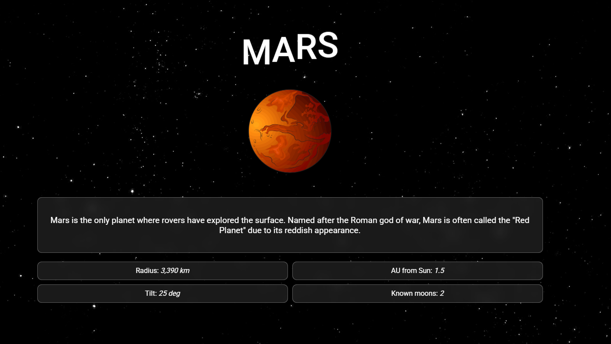

Old Portfolio
Mission
This was the first portfolio I designed and created. I started off watching a tutorial and following along, but ended up adding my own personal touches as I got better. I wanted a place to display my skills, showcase my projets, and talk a bit about myself.
Tools and Technology
Key Features
Futuristic Theme
The portfolio theme is futuristic pink. It uses neon elements, animation, and color to create the aesthetic.
Project Descriptions
Each project has a page with instructions to run it and an overview with mroe details.
Blog Section
There is a blog section with some insights, stories, and personal experiences.
Solution
I wanted my portfolio to be minimal but also reflect my personality. I created different section but made it a single page app for simplicity. I wanted to start with a small bio to let people learn more about me. Then have a skills section, job portion, and project grid. Because this was created a couple years ago I didn't have many completed projects to add, and a grid was a modern approach to having them all visible at once.

Process
Brainstorm colors and theme ideas
Add in all the relevant information and check for spelling and grammar
Follow along with the tutorial and create the project in VS Code
Make some changes and add personal touches to the project

Challenges
This was my first time using more advanced CSS and following a guide in terms of structure, best practices, and adding animations to a project using only CSS. I had several issues while I was following the tutorial and had to debug why my screen was not showing the correct outcome. It was also a challenge to make the site responsive and still maintain the same level of professionalism. Getting the blog section to have cards that were in a carousell structure was difficult because it was the first time I had implemented something like it. There was a lot of debugging and polishing to make sure it worked smoothly and did not distort the cards.
Learned Along the Way
I think through this project I learned a lot about HTML structure itself. I had never used the section tag before bit it was very useful for organization. I also got some experience with css animations and using them in a way that enhances my information and doesn't overwhelm it. It was a learning process both in the code implementation and designing it. I had to learn how to create a professional site while also making it feel personal and reflective of my style.

This portfolio was created about two years ago and is hosted on GitHub Pages. It is slightly out-dated now, but feel free to explore using the button below.